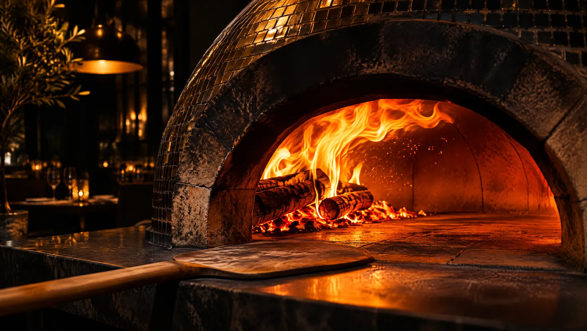
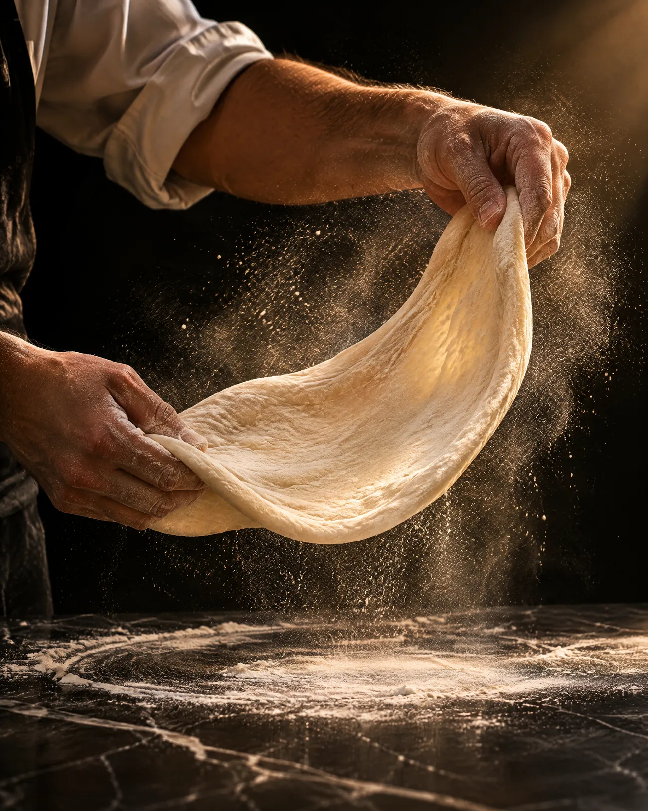
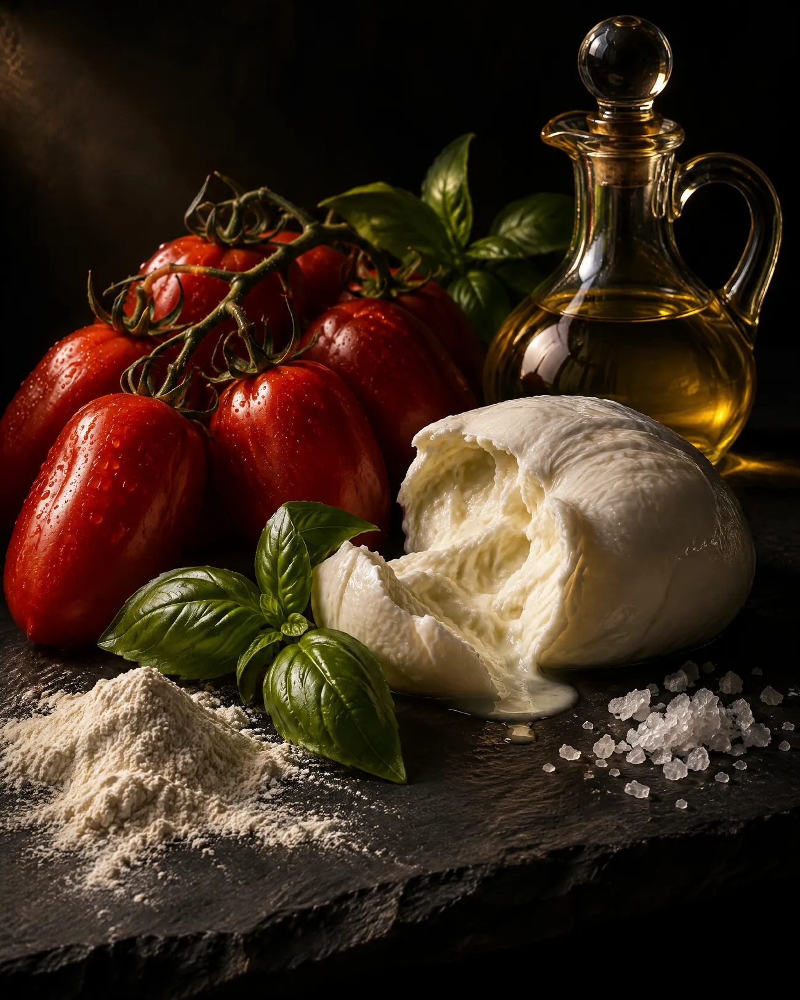

Pizzeria napolitaine · Toulouse
Forno Nero
Une pâte, un feu, quatre-vingt-dix secondes. Tout le reste est affaire de patience.
01 — La pâte
Soixante-douze heures de repos
Farine de type 00, eau, sel, une pincée de levure. Puis trois jours au frais : le temps qu'il faut pour un bord soufflé, léger, qui craque puis fond.
- 72 h
- de maturation
- 68 %
- d'hydratation
- 250 g
- le pâton
02 — Le feu
485 degrés, pas un de moins
Notre four a été monté pierre à pierre par un artisan de Naples. Chêne et hêtre, une flamme vive : la pizza y passe quatre-vingt-dix secondes, puis le basilic arrive, cru.
- 90 s
- de cuisson
- 2,4 t
- de pierre volcanique
03 — La part
Tomate, lait, basilic
San Marzano de l'Agro Sarnese, mozzarella de bufflonne livrée deux fois par semaine, huile d'olive pressée à froid. Trois ingrédients n'ont nulle part où se cacher.
Voir la carteLa carte
Huit pizzas, pas une de plus
La carte change avec les saisons. Celle-ci est celle de l'automne.
Margherita 13 €
San Marzano, mozzarella fior di latte, basilic, huile d'olive
Marinara 11 €
San Marzano, ail de Lautrec, origan de Sicile, huile d'olive
Bufala 16 €
Tomates jaunes du Vésuve, bufflonne crue ajoutée à la sortie du four
Diavola 15 €
Spianata piquante de Calabre, fior di latte, piment frais
Nduja e miele 17 €
Nduja, stracciatella, miel de châtaignier, zeste de citron
Ortolana 15 €
Courge rôtie, scamorza fumée, sauge, noisettes du Piémont
Quattro latti 16 €
Fior di latte, ricotta, gorgonzola doux, parmesan 30 mois
Tartufo nero 22 €
Crème de truffe noire, champignons de saison, jaune d'œuf confit


La maison
Le geste avant tout
La pâte ne connaît pas le rouleau. Elle s'étire à la main, du centre vers le bord, pour pousser l'air là où il doit gonfler. Il faut deux ans pour l'apprendre, et une vie pour ne plus y penser.
Nous sommes quatre devant le four. Vous nous verrez depuis toutes les tables.

Les produits
Peu de choses, très bien choisies
Chaque producteur est nommé sur la carte. Nous allons les voir une fois l'an, en Campanie, quand les tomates sont mûres.
- 11
- producteurs
- 0
- congélateur
« La meilleure margherita que j'aie mangée de ce côté-ci des Alpes. »
Réserver
Une table ce soir ?
Quarante couverts seulement. Nous gardons toujours quelques places au comptoir pour celles et ceux qui passent.
- Adresse
- 14, rue des Braises
31000 Toulouse - Horaires
- Mardi au samedi
12 h – 14 h · 19 h – 22 h 30 - Contact
- 05 00 00 00 00
bonjour@fornonero.example - À emporter
- Sur place uniquement,
jusqu'à 21 h